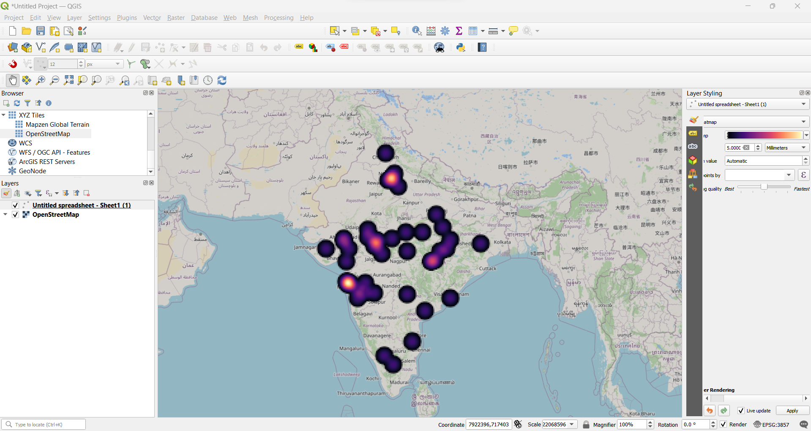
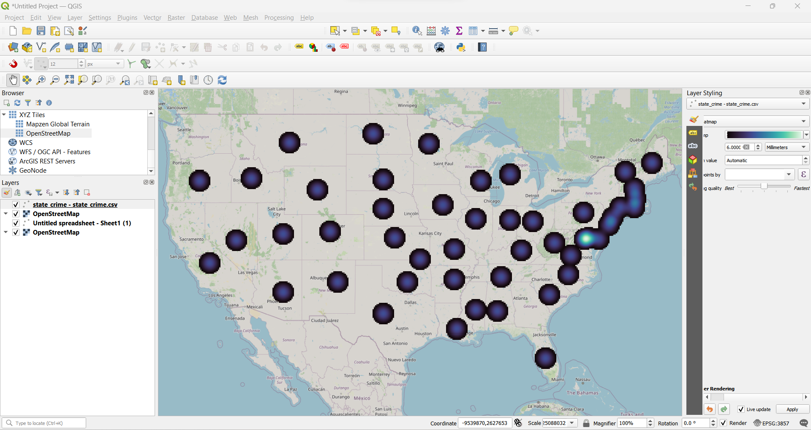

QGIS is a free and open-source cross-platform desktop geographic information system (GIS) application that supports viewing, editing, printing, and analysis of geospatial data
QGIS functions as geographic information system (GIS) software, allowing users to analyze and edit spatial information, in addition to composing and exporting graphical maps. QGIS supports raster, vector and mesh layers. Vector data is stored as either point, line, or polygon features. Multiple formats of raster images are supported, and the software can georeference images.From wikipedia
The perfect open-source solution to transform spatial data into insightful visualization, QGIS is already the industry favorite. Whether you are a data engineer, a researcher, or a businessperson, QGIS is the only software you will need to create interactive map sets.
A special case of QGIS is creating data-driven heat maps to facilitate high-end understanding of the data. To explain, let us see the two heat maps generated using QGIS.
We want to locate the top 50 cities that complied with the Swachch Bharat Abhiyan and compile the data in a comma-separated-value (.csv) file. You can view the file here.

Here is a heatmap of the crime rates in India. We have used data from state crime departments (download it here).
